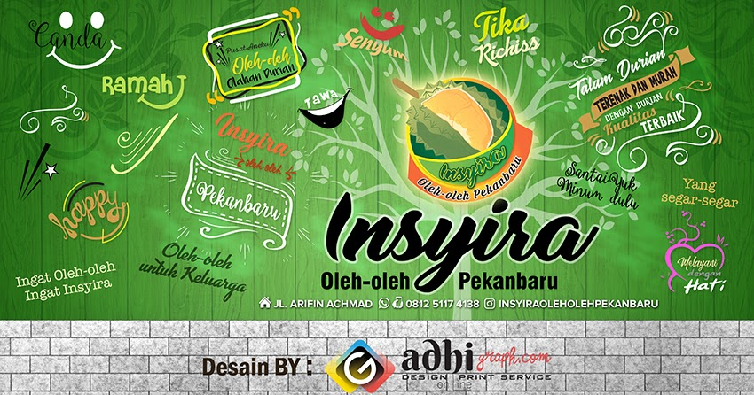
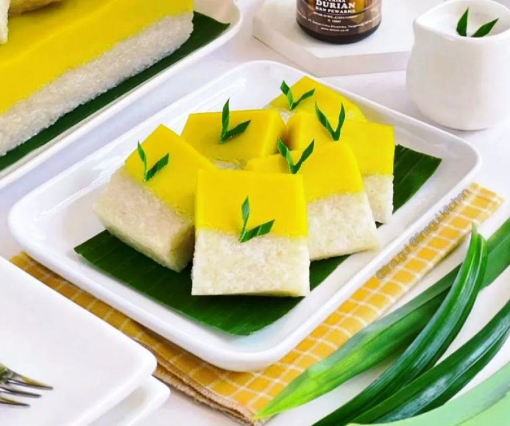
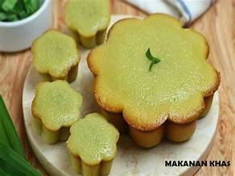
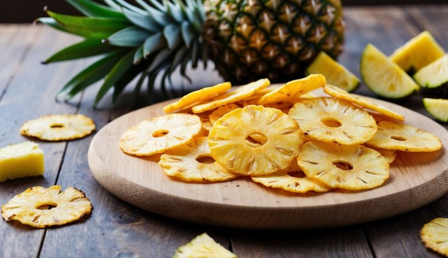
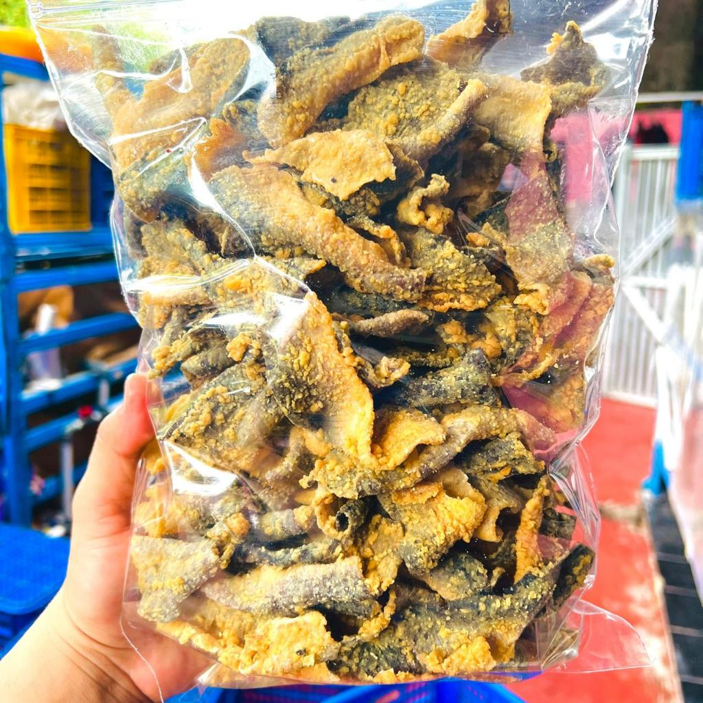
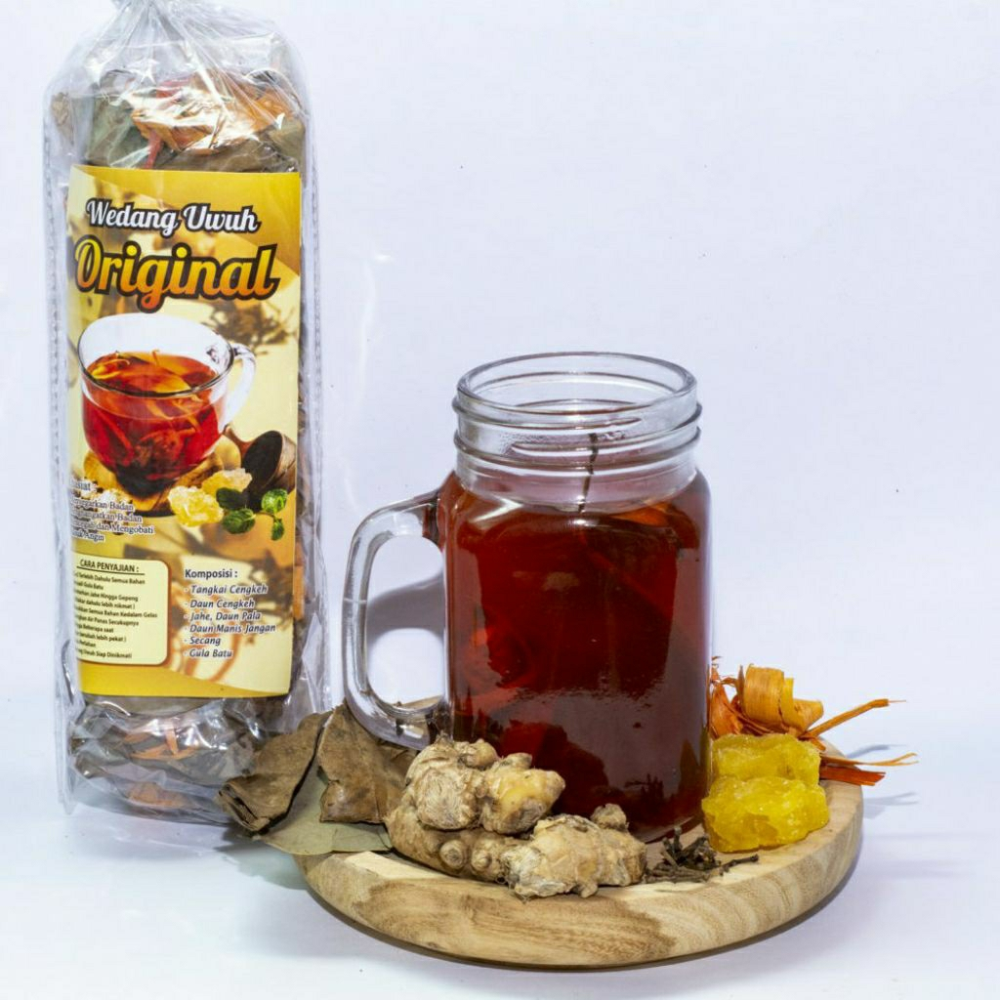
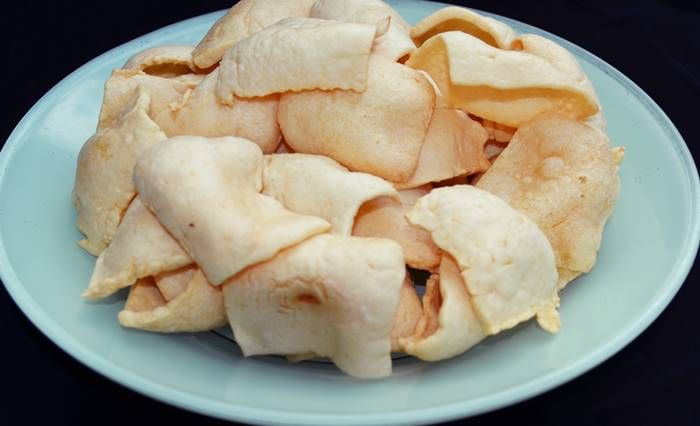

Pusat Buah Tangan Melayu Riau
Sejak 2016, Insyira menghimpun jajanan dan oleh-oleh terbaik dari dapur-dapur rumahan Pekanbaru — talam durian legit, bolu kemojo mini, hingga keripik nenas renyah — untuk dibawa ke meja siapa pun yang merindukan Riau.

Talam durian legit favorit Pekanbaru sejak 2016
Tentang Insyira
Berdiri sejak 2016 di Jalan Arifin Ahmad, Insyira Oleh-oleh tumbuh menjadi salah satu pusat oleh-oleh terlengkap di Pekanbaru — dari jajanan basah, aneka keripik, frozen food, hingga minuman segar khas Riau, semua tersedia dalam satu toko.
Insyira turut mengambil bagian dalam Rekor MURI Kue Talam Durian sepanjang 1 KM pada perayaan HUT ke-242 Kota Pekanbaru — bukti kecintaan kami pada jajanan durian yang jadi ciri khas toko ini.
Produk Unggulan

Kue talam durian legit, produk andalan yang membawa Insyira ikut memecahkan Rekor MURI.
Rp 25.000
Kue pandan lembut ukuran mini dengan motif bunga cetakan, favorit pelanggan Insyira.
Rp 6.000 /pcs
Camilan renyah dari nenas pilihan, salah satu buah tangan favorit dari toko ini.
Rp 28.000
Renyah dan gurih, camilan berbahan kulit ikan patin yang jadi salah satu andalan toko.
Rp 30.000
Minuman segar sehat andalan Insyira, cocok jadi teman perjalanan pulang.
Rp 15.000
Kerupuk sagu renyah khas Riau, camilan ringan yang tahan lama untuk perjalanan jauh.
Rp 20.000Kenapa Insyira
Dipasok langsung dari petani dan perajin sekitar Riau.
Dikemas rapat agar tetap segar sampai tujuan.
Setiap pembelian menopang puluhan usaha kecil lokal.
Diproduksi mengikuti standar keamanan pangan.
Kata Mereka
Kunjungi Kami
Jl. Arifin Ahmad No. 29, Kel. Sidomulyo Timur, Kec. Marpoyan Damai, Pekanbaru, Riau 28289
Setiap hari, 06.00 – 22.00 WIB
+62 812-5117-4138
@insyiraoleholehpekanbaru